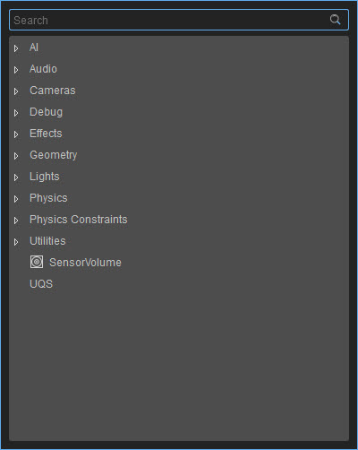
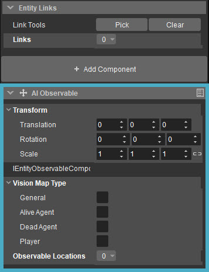

Обзор
Система Entity Component устраняет необходимость в игровом коде CRYENGINE для отображения и управления сущностями внутри сцены. Более того, система была разработана, чтобы предоставить разработчикам модульный и интуитивно понятный способ создания игр как на уровне системы, так и на уровне сущности.
Модель взаимодействия (в редакторе Sandbox) позволяет разработчикам создавать пустые (пустые) контейнеры Entity, которые, в свою очередь, содержат расширенную игровую логику, завернутую в определенные компоненты. Некоторые примеры компонентов: сетка, освещение, ограничения и даже контроллеры персонажей. С помощью этих типов компонентов пользователи могут разрабатывать префабы, которые дизайнеры уровней могут размещать в игре для стандартизации.
Панель «Компоненты» содержит все доступные компоненты, которые можно применить к объекту. В этой статье подробно описаны индивидуальные настройки для каждого из Компонентов.

Когда эти Компоненты сущности применяются к сущности, в свойствах этой сущности появляется новый подраздел: 
Его можно удалить из объекта, нажав кнопку в правом верхнем углу и выбрав Удалить.
Трансформация
Многие компоненты имеют настройку Transform. Это позволяет смещать их положение и ориентацию относительно объекта, к которому они прикреплены, при этом следуя за ним.
| Настройка | Описание |
|---|---|
| Перевод | Позиционное смещение относительно объекта — например, значение 0,0,1 будет означать смещение на одну единицу вверх (ось Z). |
| Вращение | Смещение поворота относительно объекта. |
| Масштаб | Смещение масштаба относительно объекта. Символ связи фиксирует масштабирование, чтобы значения относились друг к другу. Например, значение 1,2,3, масштабированное в 2 раза, даст 2,4,6. (если разблокировано, масштабирование не может быть гарантировано). |